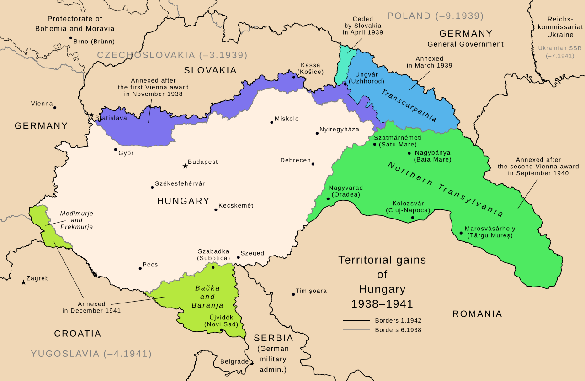

Üdvözöllek a II. Világháború Interaktív Oldalán!
Fedezd fel a XX. század legmeghatározóbb konfliktusát! Ez az oldal 7. osztályos tananyag alapján nyújt betekintést a Második Világháború eseményeibe, szereplőibe és következményeibe. Az információk általánosak, az országspecifikus tantervek eltérhetnek.
Használd a fenti menüt a navigáláshoz, vagy állítsd be a szimulációt és próbáld ki az interaktív részt. Jó felfedezést!
Szimulációs Beállítások
Válaszd ki a szimuláció alapvető paramétereit. Ezek a beállítások befolyásolják a 'Szimuláció' fülön megjelenő forgatókönyveket és interakciókat.
A II. Világháború Idővonala
Kövesd végig a háború legfontosabb eseményeit kronologikus sorrendben.
1939. Szeptember 1.
Németország lerohanja Lengyelországot, a háború kezdete Európában.
1940. Május 10.
Német támadás Franciaország és a Benelux államok ellen (villámháború).
1941. Június 22.
A Barbarossa-hadművelet: Németország megtámadja a Szovjetuniót.
1941. December 7.
Japán támadás Pearl Harbor ellen; az USA belép a háborúba.
1944. Június 6.
A normandiai partraszállás (D-nap), a nyugati front megnyitása.
1945. Május 8.
A háború vége Európában (VE-nap).
1945. Szeptember 2.
Japán kapitulációja, a II. világháború hivatalos vége.
A Háború Kulcsfigurái
Ismerd meg azokat a vezetőket és személyiségeket, akik formálták a háború menetét.
Winston Churchill
Nagy-Britannia miniszterelnöke
Legendás szónok, aki országa ellenállását vezette a náci Németországgal szemben.

Franklin D. Roosevelt
Az Amerikai Egyesült Államok elnöke
Vezette az USA-t a háború nagy részében, kulcsszerepet játszott a Szövetségesek győzelmében.
Joszif Sztálin
A Szovjetunió vezetője
Diktatórikus vezető, akinek országa óriási áldozatok árán állította meg a német előrenyomulást a keleti fronton.
Adolf Hitler
Németország Führere
A náci párt vezetője, a II. világháború és a Holokauszt fő felelőse.
Meghatározó Csaták
Ismerj meg néhányat a II. világháború legfontosabb és legvéresebb ütközetei közül.
Sztálingrádi csata (1942-43)
Fordulópont a keleti fronton. A Vörös Hadsereg itt állította meg és fordította vissza a német előrenyomulást.
Normandiai partraszállás (1944)
A szövetséges erők partraszállása Franciaországban, ami megnyitotta a nyugati frontot és felgyorsította Németország vereségét.
Interaktív Forgatókönyvek
Ez a rész a Kezdőlapon beállított paraméterek alapján kínál interaktív forgatókönyveket. A döntéseid befolyásolják a leírt kimenetelt.
Aktuális Szimulációs Beállítások
Választott oldal: -
Választott hadszíntér: -
Választott nehézség: -
Forgatókönyv
Kérjük, először állítsd be a szimulációs paramétereket a Kezdőlapon a forgatókönyv megtekintéséhez!
Magyarország a II. Világháborúban
Magyarország szerepe a II. világháborúban összetett és tragikus. Az ország kezdetben a tengelyhatalmak oldalán vett részt a konfliktusban, jelentős területi revíziókat elérve.
A háború előrehaladtával azonban egyre súlyosabb veszteségeket szenvedett, és 1944-ben német megszállás alá került, majd a háború végén a szovjet érdekszférába.
A magyarországi zsidóság tragédiája, a Holokauszt, szintén a korszak sötét fejezete. Az ország sorsa a háború után évtizedekre megpecsételődött.